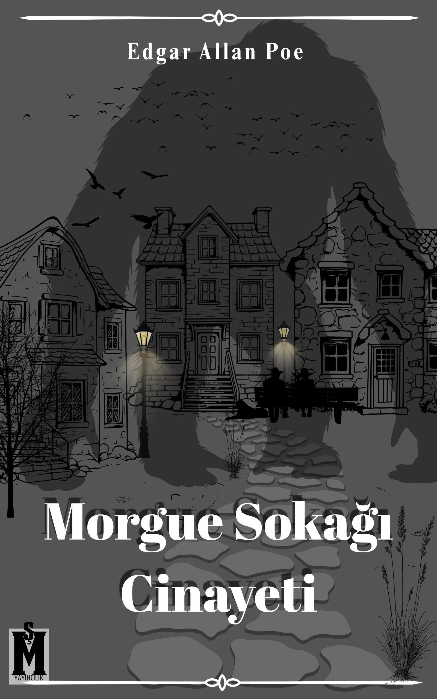
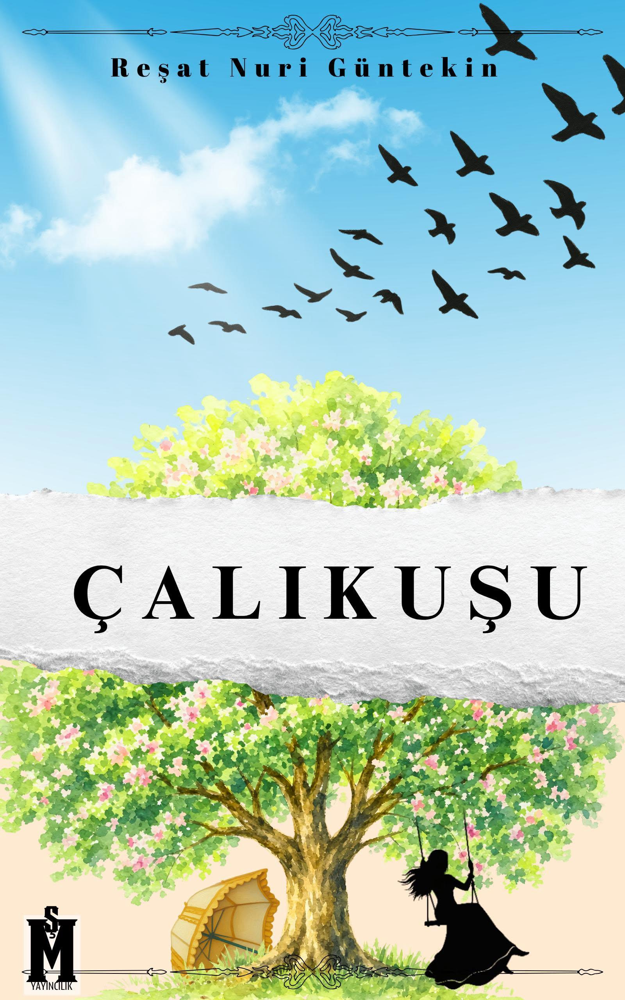
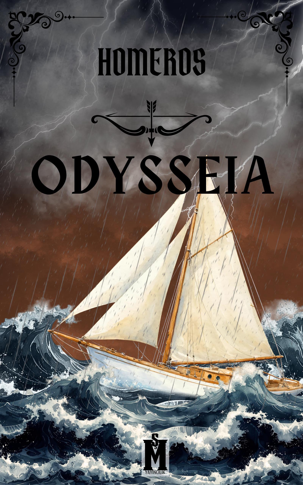

MELİKE ŞEN
Hikayeler yalnızca kelimeler ya da seslerle aktarılmaz.Duymak kadar görmek, görmek kadar hissetmek gerekir bir hikayeye erişmek için.
Alternatif Kapak Tasarımları
Morgue Sokağı Cinayeti
Morgue Sokağı Cinayetleri, Edgar Allan Poe tarafından yazılan ve ilk defa 1841'de Graham's Magazine'de yayımlanan öykü. İlk dedektiflik öyküsü olarak kabul edilen Morgue Sokağı Cinayetleri'ni Poe, "uslamlama öyküleri" olarak grupladığı öyküler arasında saymıştır.
Edgar Allan POE

Çalıkuşu
Romanda, İstanbul köklü bir ailenin kızı olan çocuk ruhlu Feride'nin çok sevdiği nişanlısı tarafından ihanete uğramasıyla kendini öğretmenlik mesleğine adaması ve hayatını kazanabilmek için Anadolu'da şehir şehir dolaşması anlatılır. Melodram ögeleri ile yüklü bir aşk öyküsünün yanı sıra bürokrasi eleştirisi, kadınların Osmanlı toplumunda var olma mücadelesi, öğretmenlik mesleğinin icrası gibi pek çok konuyu ele alır.
Reşat Nuri GÜNTEKİN
Odysseia
Destan daha çok Yunan kahramanı Odysseus'u ve onun Truva'nın düşmesinden sonra evine yaptığı dönüş yolculuğunu konu edinmiştir. On sene süren Truva Savaşı'ndan sonra Odysseus'un evinin bulunduğu İthake'ye dönmesi bir on sene daha alır. Öldüğü varsayılan Odysseus'un yokluğunda, karısı Penelope ve oğlu Telemakhos, Penelope ile evlenmek isteyen bir grup azılı taliple baş etmek zorundadır.
Homerosİletişim
Instagram: @senmelike
Instagram: @nasvelya
Email: nasvelya@gmail.com